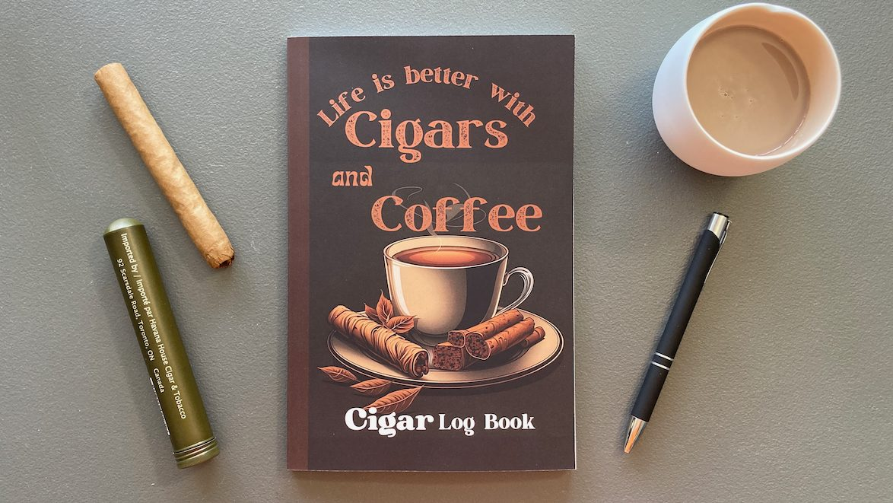
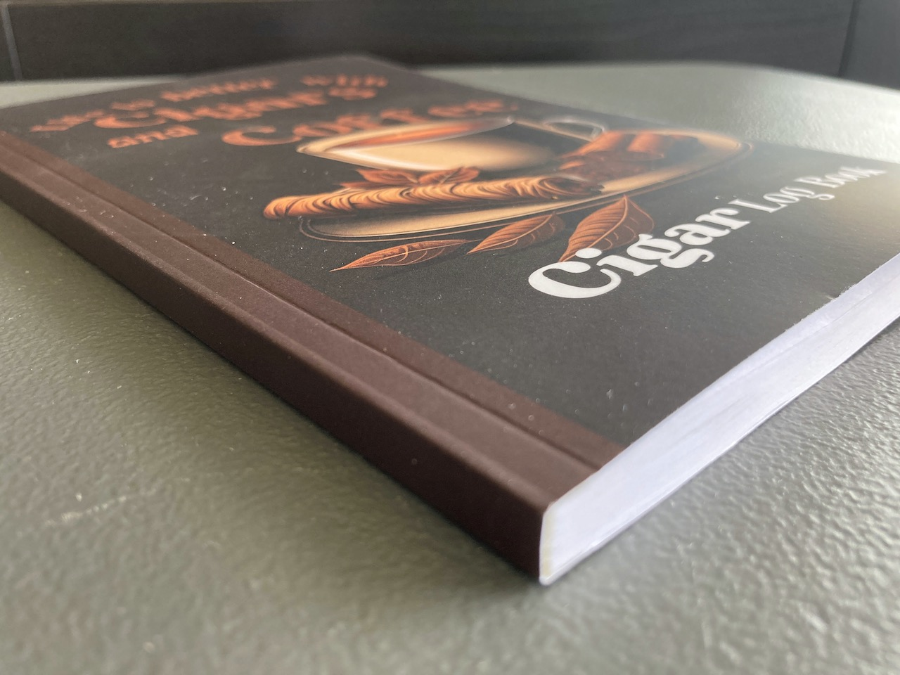
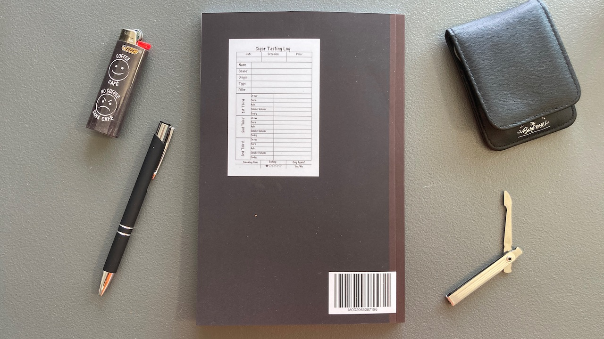
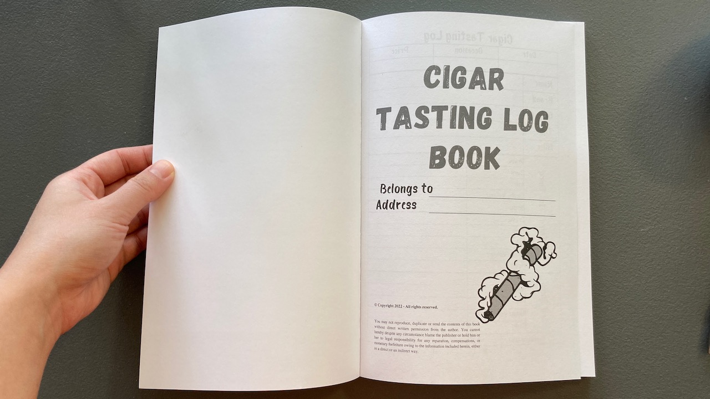
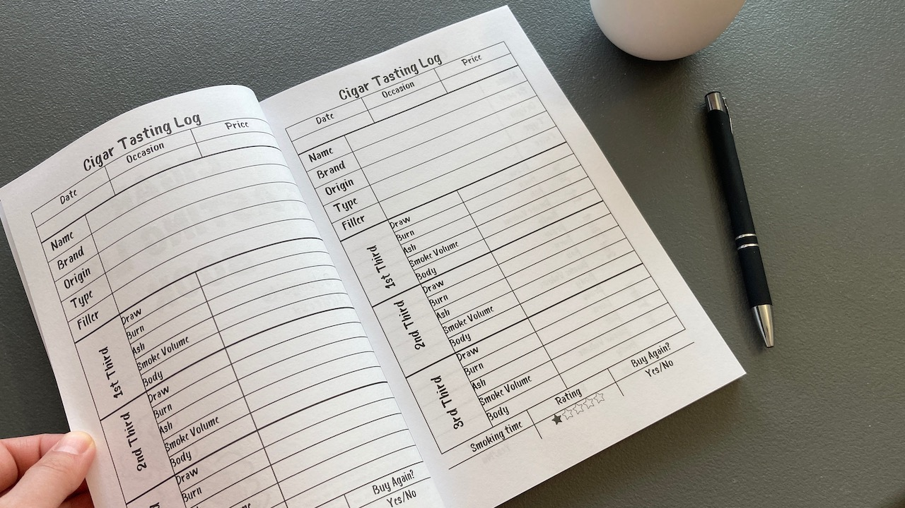
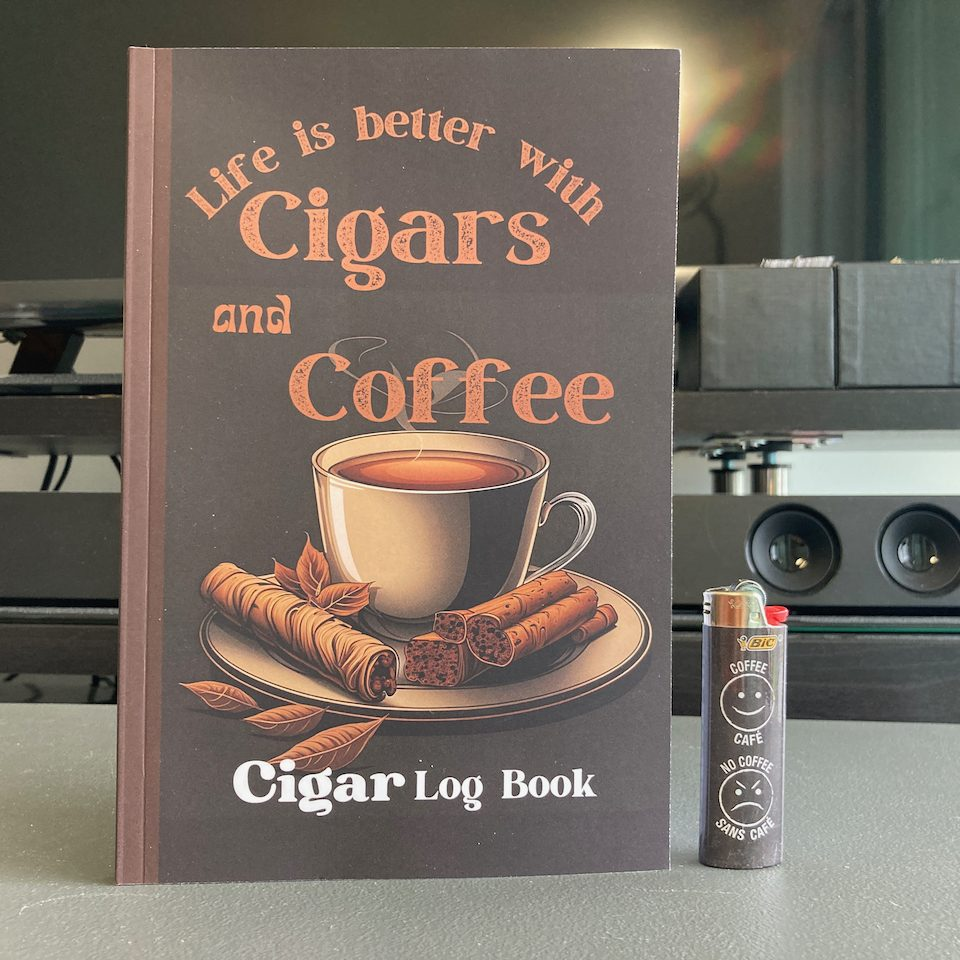

Cigar Tasting Log Book
The book that we will be taking a quick look at today is a cute little cigar log book! It's titled: Life is better with Cigars and Coffee 😋 ☕

I was fascinated by the beautiful cover. The cover of the book feels like matte-finished. It feels slightly sticky on the cover due to the material, but it's normal paper inside. I like the colour theme choice for this book. Perfect for coffee and cigar ☕
 
You will first be greeted with a page for you to fill out some info about yourself. Make this book yours! I feel like this first page could have been better with a blank page on the back because we can see the print on the next page.

The notebook organizes your notes pretty good. I really like how it sections all you need to note about the cigar for you. The font of the book look funky and colouring the rating stars is fun in my opinion. Having that said, I have two enhancement requests:
- The label column for draw/burn/ash etc is printed too close to the edge.
- It would be better to have a blank page after the tasting log for additional notes. I personally want to paste the cigar bands somewhere with my notes, but there's no space. 😕

Other than the two issue listed, I really have no other complaints. It's a good book for beginner like me to note down and learn about the cigar that I had in hand. The notebook ended with two white pages at the very end. Overall, I think it's a pretty nice log book and would recommend it if you want to draw some quick structured notes about your cigar!

After a second look, I think those are cinnamon on the cup and the graphic does not suggest much about cigar. Maybe just the colour 😂 🤎
Thanks for reading! If you find this post helpful, please consider supporting me and this website. Thank you and enjoy your day! 🏖